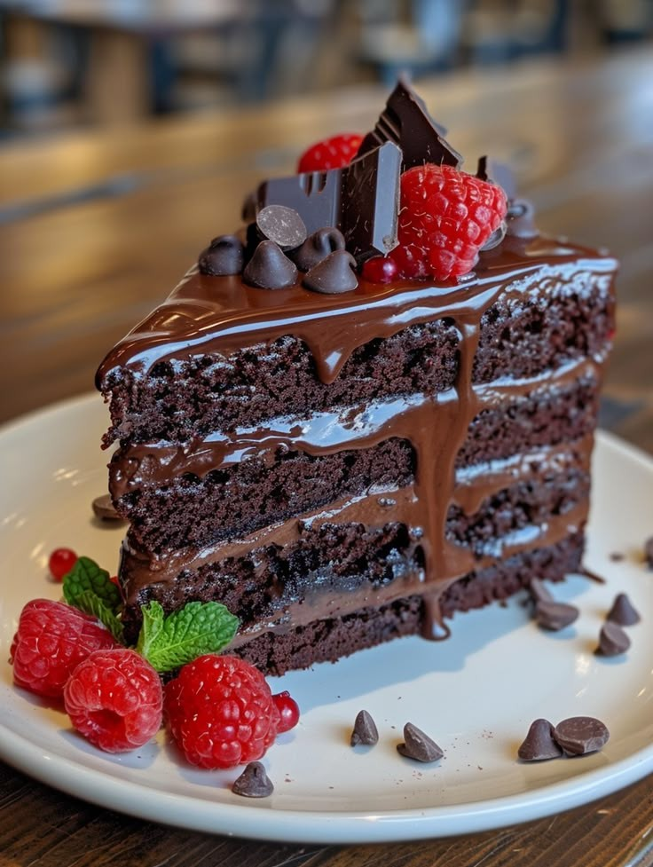

Pizza

Description
This is a delicious Italian pizza with a crispy crust, cheese, and tomato sauce.
Ingredients
- 1 pizza dough
- 1 cup tomato sauce
- 200g mozzarella cheese
- 100g pepperoni
- 1 tsp oregano
- 1 tsp olive oil
Instructions
Preheat the oven to 220°C. Roll out the pizza dough, spread tomato sauce, sprinkle cheese, add pepperoni, and season with oregano. Bake for 15-20 minutes.
Biryani
Description
Aromatic rice mixed with meat, vegetables, and a variety of spices.
Ingredients
- 2 cups basmati rice
- 500g chicken or lamb
- 1 onion, sliced
- 1 tsp cumin seeds
- 1 tsp turmeric
- 1 tsp garam masala
- 1 cup yogurt
- 2 tbsp ghee or oil
Instructions
Fry onions in ghee, add meat, spices, and yogurt. Cook rice separately. Layer rice and meat, cook on low heat for 20 minutes.
Grilled Chicken
Description
Juicy and flavorful grilled chicken with a mix of spices.
Ingredients
- 4 chicken thighs
- 1 tbsp paprika
- 1 tbsp garlic powder
- 1 tbsp lemon juice
- Salt and pepper to taste
Instructions
Marinate chicken with spices and lemon juice. Grill for 25-30 minutes until fully cooked.
Kebab
Description
Delicious skewered meat grilled to perfection.
Ingredients
- 500g ground lamb or beef
- 1 onion, grated
- 2 tbsp parsley
- 1 tsp cumin
- Salt and pepper to taste
Instructions
Mix meat, onion, parsley, and spices. Form into skewers and grill for 10-15 minutes.
Baklava
Description
A rich, sweet pastry filled with chopped nuts and soaked in honey syrup.
Ingredients
- 1 package phyllo dough
- 200g walnuts or pistachios
- 200g butter
- 1 cup sugar
- 1 cup water
- 2 tbsp honey
Instructions
Layer phyllo dough and nuts, bake at 175°C for 30-40 minutes. Prepare syrup with sugar, water, and honey, pour over baked baklava.
Cake
Description
A moist and fluffy vanilla cake topped with icing.
Ingredients
- 2 cups flour
- 1 cup sugar
- 1 cup butter
- 2 eggs
- 1 tsp vanilla extract